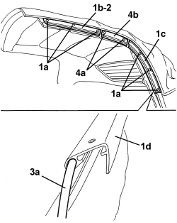
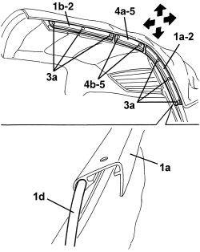

7030H33 HOOD SIDE CHANNEL (ONE), LEFT OR RIGHT - R.R.
- Path
- Procedures > 70 FITTINGS > 7030 SUN ROOF/GLASS PANEL > 7030H AUTOMATICALLY OPERATED HOOD > 7030H33 HOOD SIDE CHANNEL (ONE), LEFT OR RIGHT - R.R.
- Kind
- repair procedure (removal / refitting; the operation number is the code)
- Applies to
- engines: 2.2 JTS, 3.2 JTS; all production periods
- Interactive page
- https://sloeber94.github.io/elrnDB-aBrrSpdr/en/#/946003670
Applies to: engines: 2.2 JTS, 3.2 JTS; all production periods
 Removing
Removing
 Refitting
Refitting- Place protective cloths on the vehicle fittings and bodywork.
Op. 7030H37 SEAL (ONE), LEFT OR RIGHT, HOOD SIDE SEAL - R.R.
1. Drill out rivets (1a) securing side drip channels (1b) (1c) (recover removed rivets).
2. Remove side drip channel (1b).
3. Withdraw side drip channel (1c) from hood canvas lining strip (3a).
Undo bolts (4a) and remove central drip channel (4b) and recover the plastic washers situated between the drip channel and the hood frame.

Applies to: engines: 2.2 JTS, 3.2 JTS; all production periods
Refitting
Removing- Check that the side drip channels are not damaged. Restore surface protection to metal parts, which may have been damaged when the rivets were removed, etc.
1. Slide side drip channel (1a) into hood canvas lining strip (1d).
2. Position side drip channels (1a) (1b).
3. Apply rivets (3a) securing drip channels.
4. Position central drip channel (4a) and the plastic washers, then screw in bolts (4b) without tightening them (for later adjustment on the door windows).
Op. 7030H37 SEAL (ONE), LEFT OR RIGHT, HOOD SIDE SEAL - R.R.
- Check that the hood and door windows work correctly.
5. In particular, check the seal fitted on drip channel (4a) is correctly positioned when the door windows are in the closed position; if necessary remove the seal (op. 7030H37) and loosen bolts (4b) then adjust the position of drip channel (4a); the possible position changes are indicated by the arrows. After adjustment, tighten bolts (4b).
